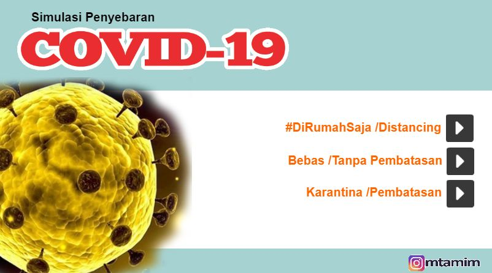

Aplikasi
ini merupakan simulasi sederhana penyebaran Covid-19
dengan 3 kemungkinan penyebaran:
(1) jika diterapkan physical distancing atau dengan tetap di
rumah,
(2) pembatasan pergerakan dan (3) tanpa pembatasan atau orang
bergerak bebas
dimana masing-masing memiliki kecepatan yang berbeda.

Developed by: @mtamim